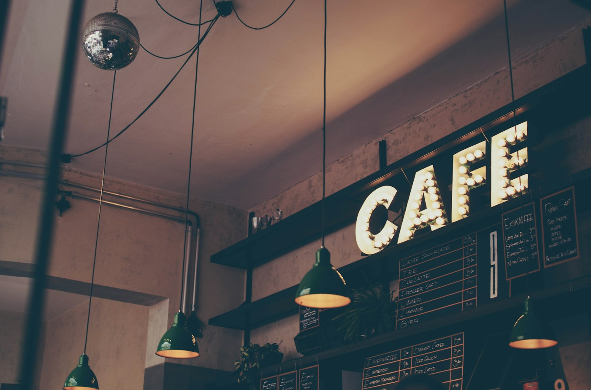

Un nume cu rădăcini adânci în istoria Aradului
Serile bune încep aici...
Un loc în care istoria, atmosfera de odinioară și gastronomia contemporană se întâlnesc în inima orașului.

Povestea noastră
Aradul a fost, de-a lungul veacurilor, un oraș al oamenilor care au crezut în ceva mai mare decât ei înșiși. Unul dintre aceștia a fost Ioan Mețianu — episcop, cărturar și ctitor, un om al cărui nume a rămas gravat în memoria orașului de pe malul Mureșului.
Casa Mețianu s-a născut dintr-un respect sincer față de acest spirit: al mesei comune, al comunității, al tradiției păstrate cu grijă și transmise cu mândrie.
Nu am vrut un simplu restaurant. Am vrut un loc care să poarte ceva din demnitatea și căldura pe care Ioan Mețianu le-a adus acestui oraș, un loc în care tradiția românească stă la masă alături de influențe din lumea largă, exact cum Aradul a știut mereu să fie: deschis, dar înrădăcinat.
La Casa Metianu, fiecare masă este un prilej de întâlnire. Cu familia, cu prietenii, cu orașul, cu tine însuți. Gătim cu ingrediente locale, cu rețete care au trecut prin mâini și prin amintiri, și cu deschiderea față de tot ce e bun în bucătăriile lumii.
Povestea lui Ioan Metianu ↓Casa Mețianu
Povestea lui Ioan Mețianu
Născut în 1828 în Zărnești, Ioan Mețianu a venit la Arad în 1875 ca episcop al eparhiei și a rămas aici aproape un sfert de veac. În acei ani, a construit din temelie sediul Arhiepiscopiei, a pus bazele a sute de școli românești, a înființat tipografii, a apărat limba și demnitatea oamenilor săi. Nu a fost un om al luxului, a fost un om al mesei comune, al comunității, al tradiției păstrate cu grijă și transmise cu mândrie.
În 1898 a plecat la Sibiu, ales Mitropolit al Transilvaniei, ducând cu el spiritul Aradului. A murit în 1916, lăsând în urmă un oraș mai educat, mai unit și mai conștient de sine.
Rezervări
Fă loc unei seri
de ținut minte.
Trimite-ne detaliile, iar echipa Casa Mețianu te va contacta pentru confirmarea mesei. Rezervarea devine valabilă după confirmarea din partea restaurantului.
Arad, România
Momente speciale
Evenimente private,
cu personalitate.
Pentru cine de familie, seri aniversare sau evenimente de companie, scrie-ne și construim împreună detaliile.
Discută cu echipa ↗